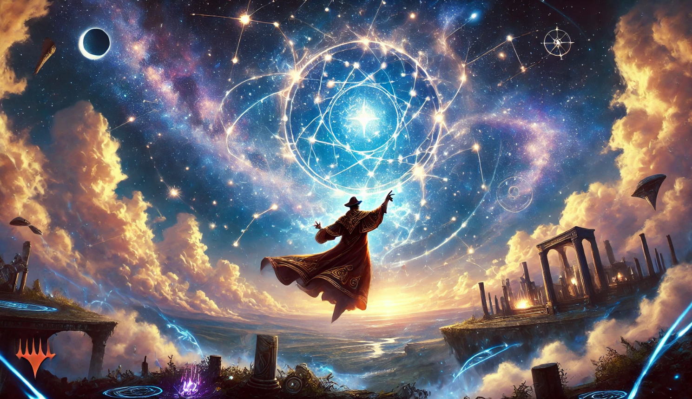

Exciting Upcoming Magic: The Gathering Releases for Q3 and Q4 of 2024
As we move into the latter half of 2024, Magic: The Gathering (MTG) fans have a lot to look forward to. Wizards of the Coast has announced a series of new releases that promise to bring fresh dynamics and excitement to the game. Here’s a sneak peek into what’s coming up in the third and fourth quarters of 2024.
Magic: The Gathering and Assassin's Creed Join Forces
Magic: The Gathering (MTG) fans are in for a treat as Wizards of the Coast announced an exciting collaboration with the popular video game franchise, Assassin's Creed.
This crossover promises to bring an intriguing blend of MTG's rich fantasy universe with the historical and action-packed world of Assassin's Creed.
Guides
Event Calendar